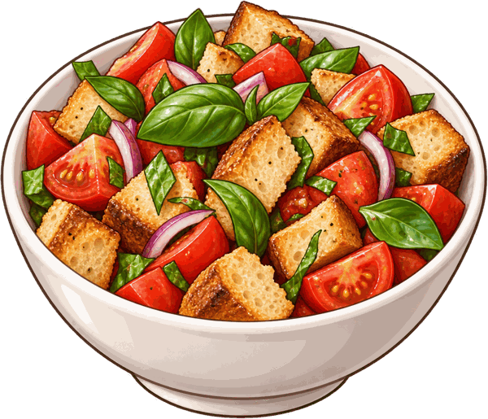

Toutes les recettes › Firenze
Ville du voyage: Firenze
Panzanella
Déjà au XVIᵉ siècle, le peintre Bronzino louait en vers le pain assaisonné d'oignon et d'huile, ancêtre de la panzanella.
Portions4
Préparation20 min
Repos50 min
DifficultéFacile
Allergènes: Gluten, Sulfites

Ingrédients
- Pain toscan rassis · 400 g
- Tomates mûres · 4
- Oignon rouge · 1
- Concombre · 1
- Basilic · 1 petit bouquet
- Vinaigre de vin rouge · 2 cuillères à soupe
- Huile d'olive extra vierge · 6 cuillères à soupe
- Sel et poivre · au goût
Étape par étape
- Faites tremper le pain dans l'eau froide 10 minutes, puis essorez-le bien à la main et émiettez-le dans un saladier.
- Émincez finement l'oignon et laissez-le 10 minutes dans l'eau avec un peu de vinaigre, pour l'adoucir.
- Coupez les tomates et le concombre en morceaux.
- Mélangez le tout au pain et au basilic déchiré. Assaisonnez avec huile, vinaigre, sel et poivre.
- Laissez reposer au réfrigérateur 30 minutes avant de servir.
Le conseil du chef. C'est le plat frais de l'été toscan : utilisez des tomates bien mûres.
Cuisinez aussi cette recette dans Tavolata
Dans le jeu, vous associez les ingrédients, complétez les commandes et restaurez des villes italiennes, de Firenze à Milano. Gratuit, avec de vraies recettes dans le Livre de recettes.
Télécharger dans l'App Store